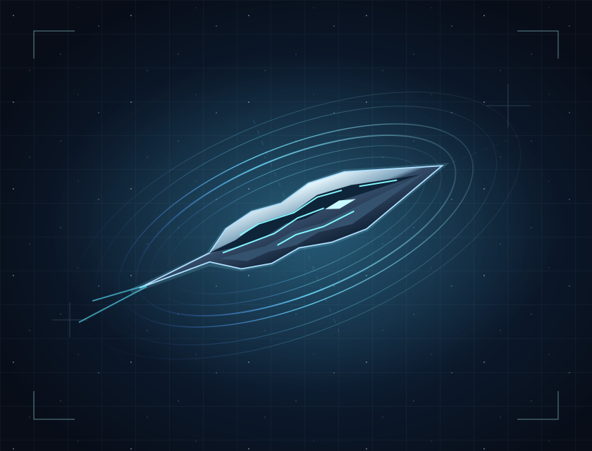

Advanced spaceflight concept
A new kind
of flight.
Starlight Industries is developing a proposal for warp propulsion: from first principles to a prototype flight program.

The program
From theory
to flight.
First, define a measurable effect. Then validate a source, build an instrumented demonstrator, and qualify a prototype. Each phase depends on what the last one can prove.
Andromeda first launch target2035Hypothetical milestone